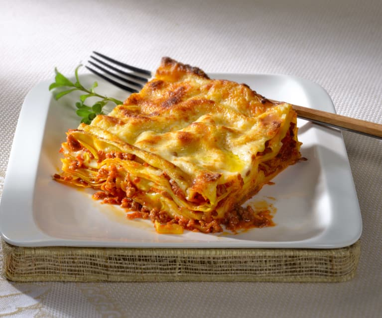

Lasagna

Lasagna alla Bolognese
Le lasagne alla Bolognese sono un'istituzione, il piatto tipico della domenica. Questa pietanza ricca e saporita è originaria dell'Emilia e, nello specifico, della città di Bologna.
Ingredients
Pasta sfoglia
- Semola di grano duro macinata 350g
- Spinaci 250g
- Tuorli 3
- Farina 150g
- Uova 2
Procedimento
- Come prima cosa versate gli spinaci in un tegame 11, aggiungete poca acqua, coprite con un coperchio 12 e lasciate cuocere fino a che non saranno appassiti,
in totale ci vorranno 5-6 minuti 13.
- A questo punto scolateli, lasciateli intiepidire e strizzateli bene 14.
Trasferiteli in un mixer 15 e frullateli fino ad ottenere una purea 16. Dovrete ricavarne 100 g.
- Adesso su una spianatoia versate la semola e la farina 00 17, aggiungete gli spinaci e create una forma a fontana.
Unite le uova leggermente sbattute 18 e i tuorli, sempre sbattuti 19.
- Iniziate ad impastare il tutto partendo dal centro 20, in questo modo le uova non scivoleranno fuori dalla fontana.
Impastate bene fino ad ottenere un panetto omogeneo 21.